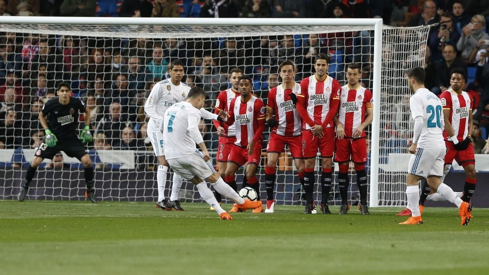

REGLAMENTOS
-
Un partido de fútbol dura 90 minutos
A soccer match lasts for 90 minutes
-
Se cometen faltas cuando un jugador derriba o empuja a un oponente
Fouls are committed when a player trips or pushes an opponent
-
Un jugador está en fuera de juego si está más cerca de la meta contraria que el balón y el penúltimo defensor
A player is offside if they are closer to the opponent's goal than the ball and the second-to-last defender
-
Se marca un gol cuando todo el balón cruza la línea de gol
A goal is scored when the entire ball crosses the goal line
-
El juego comienza con un saque inicial
The game begins with a kickoff
-
Los jugadores no pueden usar las manos para tocar el balón
Players cannot use their hands to touch the ball
-
Se concede un tiro penal cuando se comete una falta en el área de penalti
A penalty kick is given when a foul is committed in the penalty area
-
Los equipos pueden hacer hasta cinco sustituciones por partido
Teams can make up to five substitutions per match
-
Los árbitros muestran tarjetas amarillas o rojas por mala conducta
Referees show yellow or red cards for misconduct
-
Se otorgan tiros libres por faltas y manos
Free kicks are awarded for fouls and handballs

Heber Caleb Mateo Ramírez
Jamila Harley Martínez Martínez
Diana Lizeth García Bautista
Aline Guadalupe Martínez Cruz